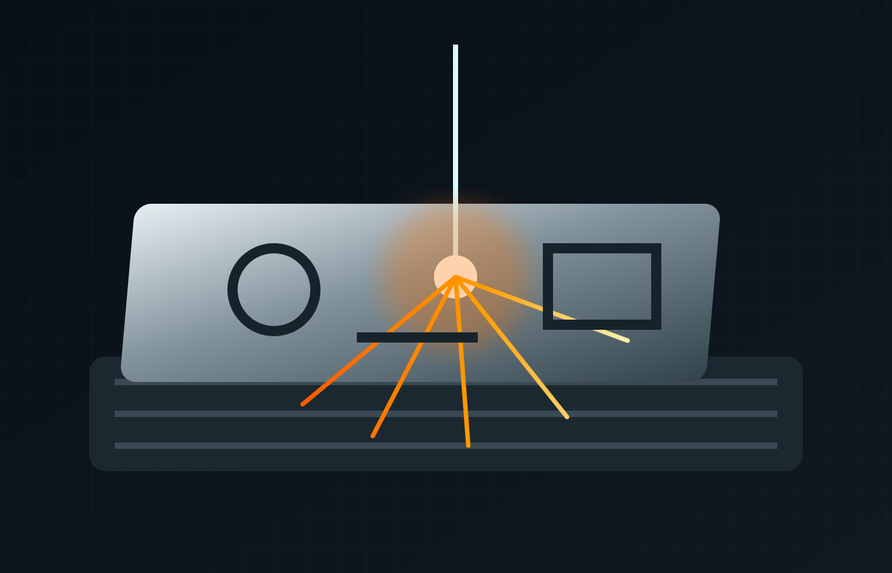

Laser cutting Sheffield.
From drawing to enquiry.
Parkway Fabrications offers laser cutting in Sheffield using an advanced 6kW fibre laser with a 3m interchangeable bed, supporting accurate profiling for bespoke and production requirements.

Cut clean. Move faster.
Laser cutting sits at the centre of a broader fabrication workflow, allowing components to move from digital design into bending, welding and finishing with fewer hand-offs.
- Advanced 6kW fibre laser
- 3m interchangeable bed
- Suitable for bespoke components and production work
- Integrates with bending, welding and full fabrication
- Sheffield-based manufacturing
Define the part. Discuss the process.
Include your drawing revision, quantity and any subsequent forming or joining requirements so the team can assess the complete brief.
Design-to-part workflow
Existing site content references 2D and 3D CAD using SOLIDWORKS as part of Parkway's broader fabrication capability.
Downstream forming
Move from laser profile to CNC bending and folding using Parkway's 4m 200t press brake capability.
Fabrication-ready output
Laser-cut parts can continue into welding, finishing and assembly for a more complete manufacturing route.
Connect the requirements.
Profile geometry, material specification and drawing revision.
- Compare all services
- Manufacturing enquiry guide
- Technical information to verify
- Project evidence & case-study structure
Sector relationships are proposed enquiry routes, subject to owner confirmation.